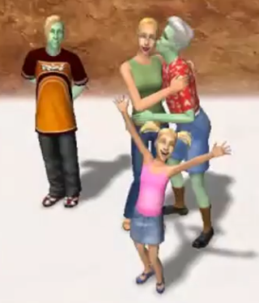
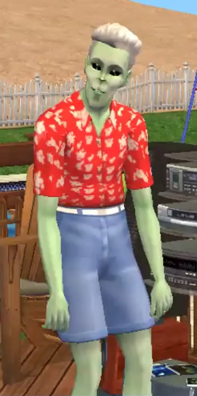

| Welcome to Strangetown | |||
|---|---|---|---|
| Case Files: | The Smith Family | ||
| Smith |
After their cosmic adventures, The Smith family decided to settle down in Strangetown. Hoping he and his family can fit in, Pollination Technician #9 adopted the name Smith. His wife, Jenny, and children, Johnny and Jill hope to continue to grow roots in the mysterious neighborhood of Strangetown. |
||
| Beaker | |||
| Specter | |||
| Curious | |||
| Strangetown | |||
|  | |||
|
After a fruitful career, Pollination Technician 9 has retired to his favorite planet. But can his son Johnny make friends and fit in, or is this family just too strange for Strangetown? |
 | Back to top | © Emily Hubers 2024 | Powered by ChatGPT |